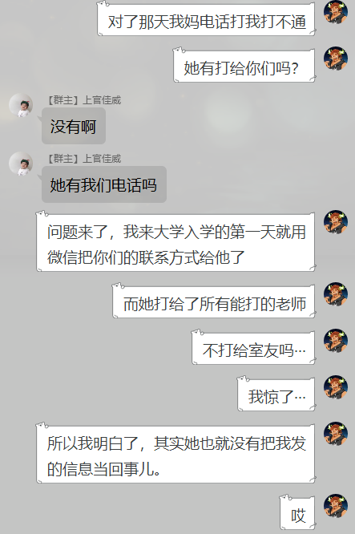

本文进一步分析：我的爸妈是如何听风就是雨，不会实事求是，不追求事实原委，且热衷胡编乱造，酷爱乱贴标签的。
下面给大家讲讲更多的细节：
我在大二的时候，好像被后妈看到过一段微信动态。
大致内容是说，我在使用电动自行车代步。
从那以后，我后妈通过她对这一条动态的个人主观臆想，对我贴上标签，她多次在我面前的场合宣称，我不会骑自行车，我在学校里都是租用电动的自行车代步的。
并以此来诽谤和嘲讽我不会自行车。
首先，从【正常逻辑】的方面来说，这合理吗？真的不合理。
其次，从【素质素养】的角度来说，这合适吗？简直是荒谬。
可能你们不明白为什么她这样点点愚昧表现，会让我那么生气。我来给大家理一理：
首先澄清事实，电动自行车我最多用过两次，后来学校的代步工具调整，很多无论是共享交通工具都被清理过，所以我依赖这个工具的说法，不成立。
其次，我会骑自行车，而且是我一到大学第一次上车就会骑，而且从来没有摔过。
而且唯一真的有帮助到我的学会骑自行车的人，是我的同桌。高中的某一个周末他把自行车借给我练习。虽然他的自行车很老，但是他扶我的时候被我撞过也没说什么我很感动。
而且，我大学骑自行车从来没撞过，摔过。所以我不会骑自行车的说法，不成立。
那有什么好生气的呢？
我的气点在于，我为什么会去用那个【电动自行车】？
还不是因为真的上课来不及了，室友都坐自己的电瓶车走了，而我走路根本赶不到吗？
是的，我在学校的主要交通方式是走路，从杏男寝走到29幢教学楼要15~20分钟。这个距离差不多斜着横跨大半个校园的距离。
偶尔能抢到自行车的时候，能10分钟左右赶到。但是一般上课前抢不到自行车的。
所以我很多同学都合租或者自己买了电瓶车代步，大约2000不等。
我觉得我自己还是比较有良心的，我知道我不是独生子女，我去考虑钱的问题的时候都会去设身处地地为其他家庭成员考虑。我潜意识里就有很强地意识告诉我，我不应该乱花钱。
因为钱不是我挣的，我乱花不体面；而且我弟弟还在上小学，我一个上大学的长子如果太任性的话，家里的资金分配就会很困；而且的而且我确实有一定的自尊，我能自己解决的事情，我一般都不爱麻烦我以外的人。
我自己负担不起电瓶车，而且也进进出出坚持走下来了，我也知道和我一样的人有很多。所以我并没有因为这个而生过什么气。
直到我后妈那我骑【电动自行车】开玩笑以后。我感到很心寒，而且我也解释了，但是也没见的她听进去多少。她既然不关心事实，我不是观世音菩萨，又何德何能可以让她醒悟呢？
从那以后，我的微信动态决定不想用了，我不需要去屏蔽，因为我其实根本不需要微信动态。我的微信动态发的目的，也是因为只有我家人会看会在意，同学很少关注微信的。
但我在删微信的时候发现，其实也不是每条微信动态都有点赞。苦笑。
既然我发微信动态只会给她曲解，歪曲，变成伤害我的东西，我为什么要发呢？
且不提我一切的初衷都是为了更节约，不想乱花父母钱而已。是谁步步紧逼让我无可奈何的呢？
我在家里受到许多不公的对待还有怨气，迟早会有一天达到我忍耐的限度的。
于是那么一天就来了。
2019年大三刚开学不久，我来到学校，一段时间非常忙碌。我后母学费打过来了，那天深夜我很累而且很忙肝一个作业，我没有心思来分神去处理她的消息，而且她本身已经让我很不高兴了。
我事情做完已经凌晨三四点了，我看了消息，已阅。我知道是什么事情，学费到账了，那不是普普通通吗？有什么好着急的啊？银行不会给我对不上账的把？
唯一的风险只存在于，她输错了卡号，这笔钱才有可能会丢。
而她却似乎完全把责任丢在我身上，每次转账都要我确认，把我作为负责主体，要是钱转没了好像也要怪我一样。这是荒谬的。
但是好像就这样第二天早晨，我被她的电话吵醒是辅导员好像他们跟我说我爸妈打电话联系不上我，问我怎么了，是不是平安，还是很中肯地对我我劝说，那我还可以好。
然后她就点华打来了，我心软了，接了，她劈头盖脸第一句就是：
【你怎么不接电话啊？？？】
这句的语气像什么？催债。不管是谁，这样的口气，大清早刚醒来一个人，能舒舒服服给你个好心情？对我来说，不可能的，完全是放屁的。
那时候我就在想的是什么呢：我在学校里，我也没花钱很快，也很少主动向家里要钱，要是他们忘记给我打钱了我也是自己用风险储备先撑着的。我看了一眼支付宝账单，2019年我平均每天消费21元，假如去掉不在学校里的时间，我每天的消费大概是30元，而且这是包括什么，包括了我买生活用品和出去比赛的差旅费的。
我自己看到这个数字的时候我都不可思议。但是我很开心因为我觉得我做的蛮好了，也算是一个用度不大的人了吧。
我这么勉强自己，还不是为了省掉家里对我的开支，能让父母轻松一点？我去努力争取奖学金，不也是为了能把出去比赛的费用垫底掉？我那么用心去体谅父母的辛苦了。结果呢？
后母对我的态度就是催债一样和我说：
【你怎么不接电话啊？？？】
然后怎么着？她没问我原因，没关心我是不是出事了，是不是身体不舒服，最近发生了什么。她下面的话是催我快点去看钱到账没有。
所以我知道，她在那一刻，她在乎的是那10000块学费，不是我的安危。
所以我生气了，挂电话了，我无fuck说了。很过分吗？是谁更过分？
过了很久我发现一件很奇怪的事情。
那天我后妈打给了所有她能打的老师，但是我室友没有收到她的电话。
我的辅导员班主任还是通过我室友得知我在寝室一切正常的。

我在大一刚入学不久，我记得很清楚，我绝对把我室友的电话给她了，而且是微信发给她的。而且我还叮嘱过她了，大学里室友接触更多，我如果出事情了，收到诈骗短信了说我怎么怎么啦，室友肯定是最先找到我确认的。
我绝对说过，我很有安全意识。
结果呢？
我室友就睡在我一米不到的地方，她大清早爬起来打电话给我几公里外的老师。
这不是愚蠢是什么？
但是最让我心寒的是：我没给你讲过，那就算了，我也不多想。但是我给你讲过，结果你没放在心上。我能想到唯一的原因就是的，我不是亲生的，不配人家惦记。
那我要说，就算我不是亲生的，我也给我后妈赚够了面子吧？我也很多时候都在为她着想吧？我爸家暴的时候我是心里站在她这一边的吧？
但是这些我无所谓了，不把我当自己孩子，我真的不介意了。
我发现我想要的，不是一个刻意为之的母爱，我想要的是一个对人起码的尊重。
你尊重一个人，打电话会随意吼人，语言暴力吗？而且是责任完全在你自己的时候。
所以我真的很难过，而且我居然还在心里为这样的行为开脱。
抱歉，从那以后不会了，没有道歉就没有原谅，我需要得到正式的逐一的道歉，才有可能原谅。
待续，精彩内容，敬请期待。